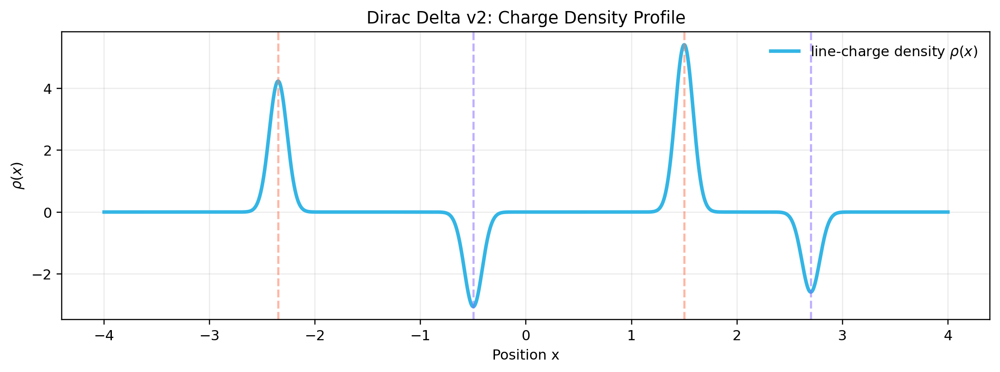
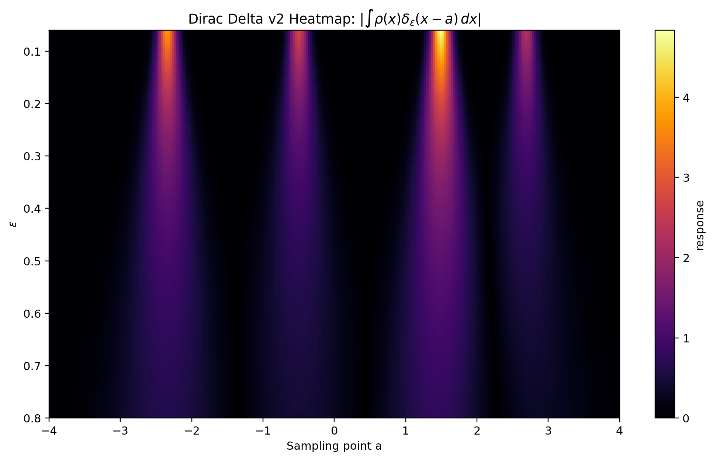

Organize the theory
Collect the core electrostatics topics into a structure that reads like a real course rather than a folder of files.
Graduate Electrodynamics Project
This project organizes Jackson-based electrodynamics into browsable topic pages, downloadable notes, formula sheets, problem sets, and computational visuals.
Overview
Collect the core electrostatics topics into a structure that reads like a real course rather than a folder of files.
Show where derivations turn into scripts, notebooks, figures, and computational demonstrations.
Keep the PDFs, formula sheets, visualizations, and chapter notes one click away from the main topic pages.
Core Areas
Dirac delta functions, Poisson’s equation, and Laplace’s equation set up the electrostatic language.
Green’s functions and the method of images turn abstract boundary-value ideas into practical constructions.
Multipole expansion and dielectrics explain how geometry and material response shape the field.
Visual Intuition

As the external charge moves, the image charge changes magnitude and position so that the conductor remains at zero potential.
Open animation
A compact view of a singular-source approximation and how the density is sampled.

The heatmap shows where the smoothed delta kernel detects the strongest signal.
Numerical Methods
Explore charge-density isosurfaces and equipotential structure from the periodic 3D C++ Poisson solver directly in the browser.
The viewer turns a static electrostatics solve into something spatial: you can rotate the periodic 3D solution and inspect where charge density and potential structure live in the same volume.
Jump In
If you want the site to behave like a course, start with the topic directory and navigate from there.
The fastest revision path is through the notes and formula sheets, especially the focused topic notes in notes-diego/.
{kind=link}